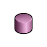
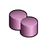
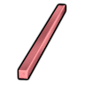
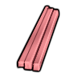
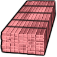

极致HSK本地补丁×1上游补丁×3超钢级·极致·贝塔聚合物BetaPoly
超钢级可塑成品 1118 件:家具建筑690 · 防具172 · 穿戴件116 · 近战工具116 · 远程武器7 · 其它17
金属全谱467 + 常规硬性件324 + 重机电(舱体/发电机/扫描仪)140 + 软质防具与织物件119
顶替 整档替到 钛铁合金(986 件基准,含其下全部金属);比钢 +178/−1 件 —— 做不了 无菌瓦屋顶;钢做不了它能做 古代科技结构 A-1「弓」、辛迪加兜帽…
① 起点 · Core_SK 的 Defs 写 Things/Item/Resource/BPoly
 BPolyCore_SK
BPolyCore_SK② Vile 换成 Things/Item/Material/PolymimeticAlloy (255,201,240) ← Alloys_0_UltraTech.xml

aVile's Materials Science
bVile's Materials SciencecVile's Materials Science③ 生效(终态) Things/Item/Resource/BPoly ← 10_Vile贴图还原.xml
 BPolyCore_SK
BPolyCore_SKThings/Item/Resource/BPoly Single (255,201,240)贴图链 3 段
护甲 1.70/2/0.20 利钝 2/1.60 价值 70 质量 0.35 Bulk 0.35
stuff CorrosionResistant, HF, LightMaterial, Metallic, RareMetallic, RuggedMetallic, SolidMetallic, StrongMetallic
HSK USLDBar, LightBar
产自 Fabricate beta poly x15(量子制造器)
源 Core_SK
Items_Resource_Alloys_Hightech.xml
极致HSK本地补丁×1上游补丁×3超钢级·极致·阿尔法聚合物AlphaPoly
超钢级可塑成品 1001 件:家具建筑679 · 防具142 · 穿戴件40 · 近战工具116 · 远程武器7 · 其它17
金属全谱467 + 常规硬性件324 + 重机电(舱体/发电机/扫描仪)140 + 飞船构件+persona武器51
顶替 整档替到 钛铁合金(986 件基准,含其下全部金属);比钢 +61/−1 件 —— 做不了 无菌瓦屋顶;钢做不了它能做 古代科技结构 A-1「弓」、eltex staff…
① 起点 · Core_SK 的 Defs 写 Things/Item/Resource/APoly
APolyCore_SK② Vile 换成 Things/Item/Material/Hyperalloy (255,168,170) ← Alloys_0_UltraTech.xml

aVile's Materials Science
bVile's Materials Science
cVile's Materials Science③ 生效(终态) Things/Item/Resource/APoly ← 10_Vile贴图还原.xml
 APolyCore_SK
APolyCore_SKThings/Item/Resource/APoly Single (255,168,170)贴图链 3 段
护甲 2/1.65/0.22 利钝 1.60/2 价值 60 质量 0.40 Bulk 0.35
stuff CorrosionResistant, HeavyMetallic, Metallic, RareMetallic, RuggedMetallic, SolidMetallic, StrongMetallic
HSK USLDBar, USLDHBar
产自 Disassemble AI persona core(精密零件组装机器人/Components II) ; Fabricate Hyperalloy x15(量子制造器)
源 Core_SK
Items_Resource_Alloys_Hightech.xml